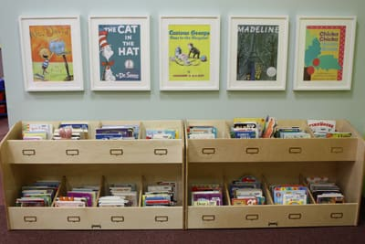
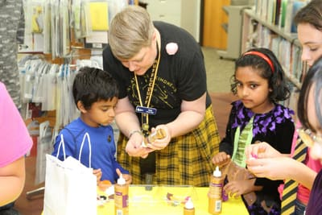

Style Guide
A quick reference for anyone editing this website. Everything here uses the same styles as the real pages.




Colors
The three logo colors (green, blue and red) plus a few neutrals. They're defined once at the top of style.css.
-
Blue
#135897var(--blue)Links, icons and outlines -
Dark blue
#0d3d69var(--blue-dark)Headings and dark sections -
Deep blue
#0a2f52var(--blue-deep)Info bar and footer -
Red
#b32b39var(--red)Main buttons, like "Become a Friend" -
Dark red
#921f2cvar(--red-dark)Main buttons when you point at them -
Green
#79a048var(--green)Decoration only. For green text, use #4f7329 -
Ink
#1f2933var(--ink)Body text -
Soft ink
#4a5866var(--ink-soft)Secondary text -
Tint
#eef3f8var(--tint)Light section backgrounds
Type
Literata for headings (it was made for reading books). Public Sans for everything else (it was made for clear public-service websites).
Page title
Literata, 36 to 54 pixels. One per page.
Section heading
Literata, 27 to 36 pixels
Card heading
Literata, 19 pixels
An introduction sentence, a little larger and softer than body text.
Public Sans, 20 pixels
Body text for paragraphs and lists, sized for comfortable reading on any screen.
Public Sans, 17 pixels
Buttons
One red button per section for the main action. Outlined buttons for everything else.
Icons
Small line icons, only beside words or inside buttons (copy, play, social links). No icons in circles or boxes.
Writing
- Headings, buttons and menu items use Title Case ("Become a Friend"). Sentences use normal capitalization.
- Always capitalize The in "The Colony".
- Times look like 10 a.m. to 8 p.m. Prices look like $15 a year.
- Use plain, friendly words, and keep paragraphs short.
- Only publish facts the Friends have confirmed. Never make up numbers, quotes or reviews.
- Link text should say where it goes ("Read the bylaws"), never "click here".
Accessibility Checklist
- Every photo gets a short description (alt text) of what's in it.
- Headings go in order: one page title, then section headings, then card headings.
- Never use color alone to show something; add words or an icon too.
- New colors need strong contrast with their background. Check them with WebAIM's contrast checker.
- Try any new feature with only the keyboard (Tab, Enter and the arrow keys).
- GitHub checks every page automatically when you push. A red X on the Actions tab means something needs fixing.